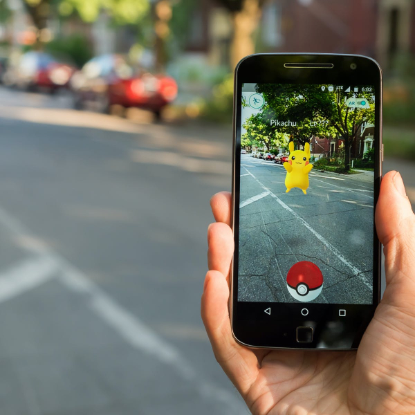
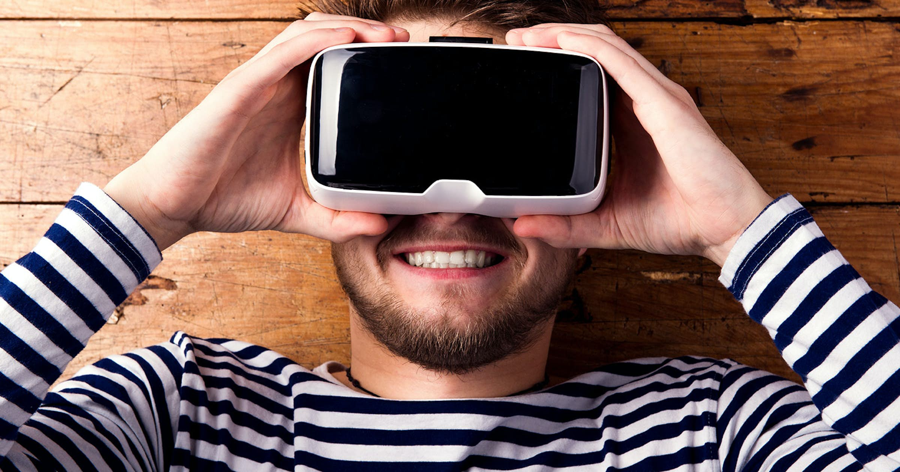

Introduction to Ar, Vr and Mr

-
It is a technology that blends digital elements with the real world.
-
It enhances the user's perception of reality by overlaying computer-generated information, such
as graphics, images, or 3D models, onto the physical environment.
-
AR can be experienced through various devices, including smartphones, tablets, smart glasses,
and heads-up displays.
- Ex. Pokemon GO and Snapchat filters

- Reality is a technology that creates a completely immersive, computer-generated environment.
-
Users wearing VR headsets are transported to a digital world where they can interact with their
surroundings.
-
VR can simulate a variety of experiences, from gaming and entertainment to training and
simulations.
-
Prominent VR devices include the Oculus Rift, HTC Vive, and PlayStation VR
-
Mixed Reality is a term often used to describe a spectrum that combines elements of both AR and
VR.
-
MR integrates digital and physical environments in a way that allows digital objects to interact
with and respond to the real world.
-
This technology blends virtual and augmented reality, enabling users to interact with digital
objects while still being aware of their physical surroundings.
-
The Microsoft HoloLens is a notable MR device